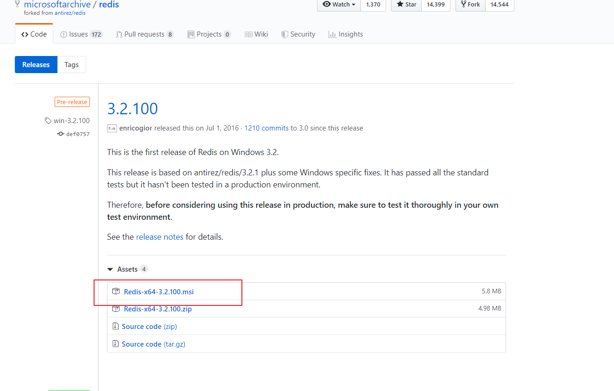
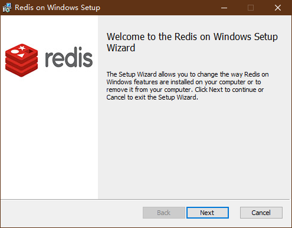

下载windows版本的redis 官网上不提供windows版本的，现在官网没有下载地址，只能在github上下载，官网只提供linux版本的下载
Github源码地址：https://github.com/antirez/redisGithub
下载地址：https://github.com/MicrosoftArchive/redis/releases
或者 https://github.com/antirez/redis/releases

下载下来，打开之后是这样的安装程序

项目 我的源码的Github地址
SpringBoot 依赖 在pom.xml 加入
1 2 3 4 5 <!--redis--> <dependency> <groupId>org.springframework.boot</groupId> <artifactId>spring-boot-starter-data-redis</artifactId> </dependency>
在 application.yml 下加入，大多数情况下默认配置即可1 2 3 4 5 6 7 8 9 10 11 12 13 14 15 16 17 18 19 spring: redis: ###数据库索引（默认0 database: 0 host: 127.0.0.1 port: 6379 password: jedis: pool: ###最大连接数（负数没有限制 max-active: 8 ###连接池最大阻塞等待时间（负数没有限制 max-wait: -1 ###最大空闲连接 max-idle: 5 ###最小空闲连接 min-idle: 0 ###连接超时时间 timeout: 10000
添加 redis config 1 2 3 4 5 6 7 8 9 10 11 12 13 14 15 16 17 18 19 20 21 22 23 24 25 26 package com.keac.config; import org.springframework.context.annotation.Bean; import org.springframework.context.annotation.Configuration; import org.springframework.data.redis.connection.RedisConnectionFactory; import org.springframework.data.redis.core.RedisTemplate; import org.springframework.data.redis.serializer.GenericJackson2JsonRedisSerializer; import org.springframework.data.redis.serializer.StringRedisSerializer; import java.io.Serializable; @Configuration public class RedisConfig { @Bean public RedisTemplate<Serializable, Object> redisTemplate(RedisConnectionFactory connectionFactory) { RedisTemplate<Serializable, Object> template = new RedisTemplate<Serializable, Object>(); template.setConnectionFactory(connectionFactory); template.afterPropertiesSet(); // redis存取对象的关键配置 template.setKeySerializer(new StringRedisSerializer()); // ObjectRedisSerializer类为java对象的序列化和反序列化工具类 template.setValueSerializer(new GenericJackson2JsonRedisSerializer()); return template; } }
测试 redis 1 2 3 4 5 6 7 8 9 10 11 12 13 14 15 16 17 18 19 20 21 22 23 24 25 package com.keac.controller; import org.springframework.beans.factory.annotation.Autowired; import org.springframework.data.redis.core.StringRedisTemplate; import org.springframework.web.bind.annotation.GetMapping; import org.springframework.web.bind.annotation.RestController; @RestController public class RedisC { @Autowired private StringRedisTemplate stringRedisTemplate; //添加 @GetMapping(value="/redisAdd") public void saveRedis(){ stringRedisTemplate.opsForValue().set("a","bbbb"); } //获取 @GetMapping(value="/redisGet") public String getRedis(){ return stringRedisTemplate.opsForValue().get("a"); } }
测试 访问下 http://127.0.0.1:8080/redisAdd
RedisDesktopManager (链接：https://share.weiyun.com/5DXnl0d 密码：666666)
用 RedisDesktopManager 可以看到已经添加进去了
不过在过程中遇到点问题
1 - Bean method 'redisConnectionFactory' in 'JedisConnectionConfiguration' not loaded because @ConditionalOnMissingBean (types: org.springframework.data.redis.connection.RedisConnectionFactory; SearchStrategy: all) found beans of type 'org.springframework.data.redis.connection.RedisConnectionFactory' redisConnectionFactory
换了下SpringBoot 版本 到 2.1.5.RELEASE 就没问题了，有点神奇 回头研究研究